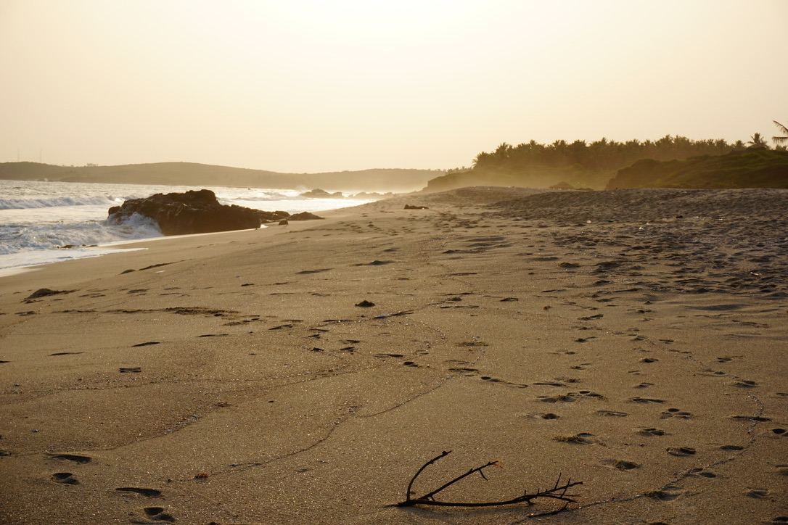
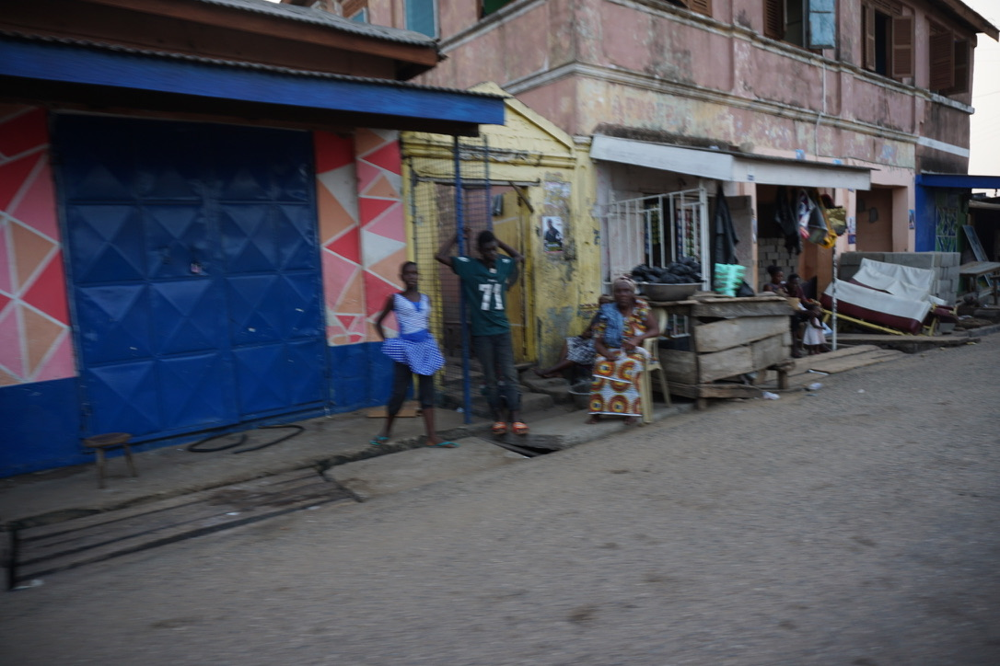
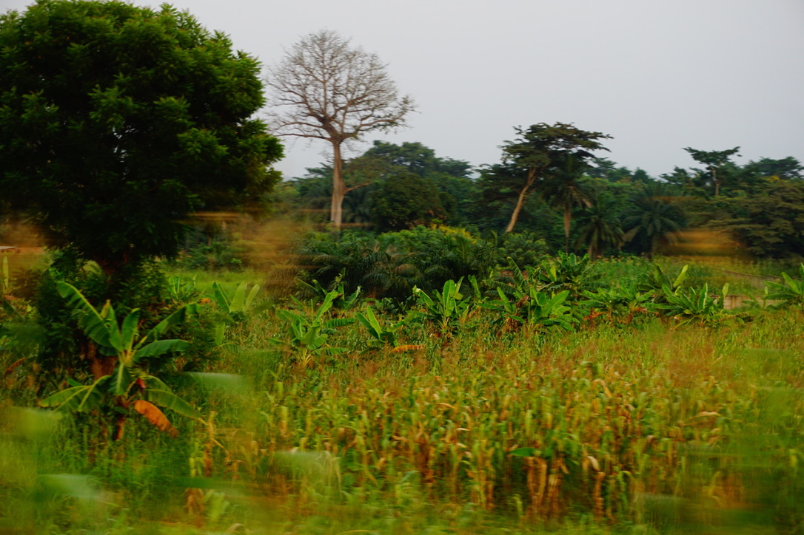
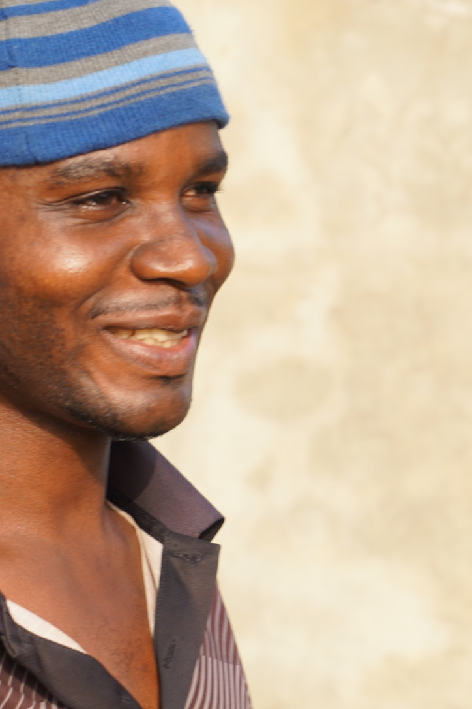
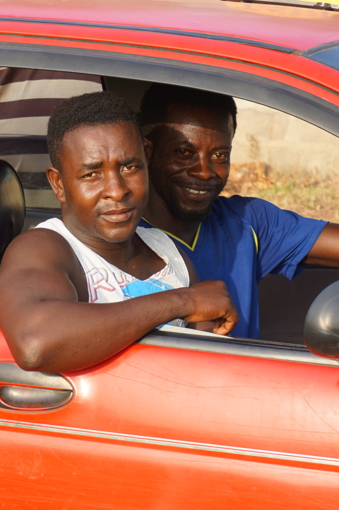
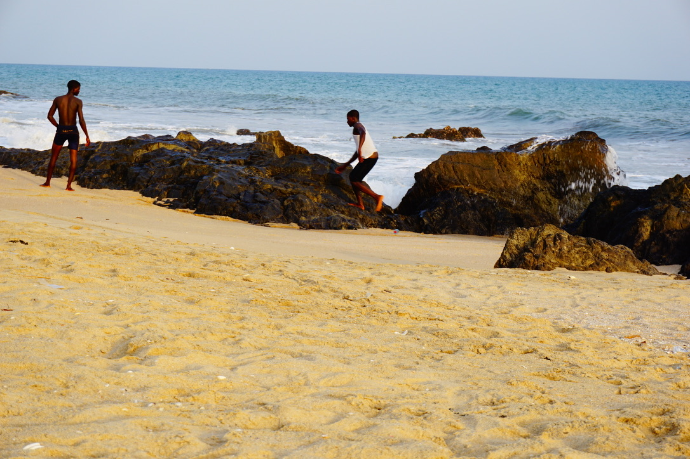
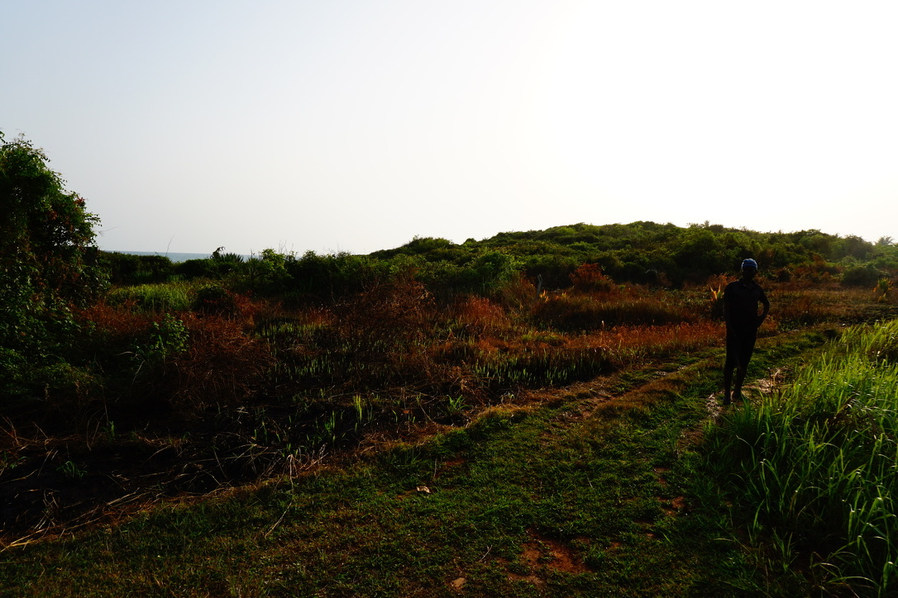

GENERATED
> deploy community
> connect intelligence
> scale abundance
An imagined system: coherent, clean, plausible.
An open workshop
Art, compute, frontier AI, open source and people with room to make things.

Solvinter is not built around a product.
It is built around agency: give people access to tools, compute, networks and time — then let them decide what to make.
One prompt. Two realities.






Mellan röd jord och Atlanten
Photographs from Ghana, 2016. AI helped curate and build the room. The events themselves were lived.
A laptop. An Android phone. Internet. Frontier AI. Shared compute when needed. A suggestion to create a GitHub account and a stablecoin wallet.
No assigned career. No predetermined project.
What do you want to do?
Passive compute can finance internet, AI access and future memberships. The capital risk stays with Solvinter. The opportunity is passed onward.
compute → cash flow → access → agency
Open source.
Transparency.
Local autonomy.
Self-sustaining where possible.
Shared tools, independent work.
Pass it forward.
Solvinter has a beginning, but it is not meant to own what other people build.